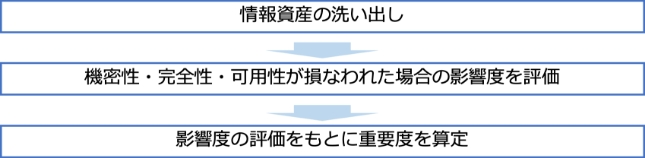
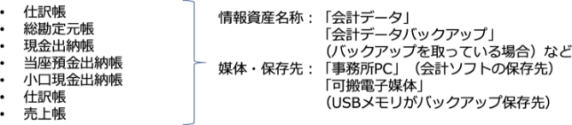

11-2-2. リスクの特定
リスク特定
リスクアセスメントの1つ目のプロセスである「リスク特定」について説明します。リスク特定とは、「リスクを発見、認識及び記述するプロセス」[21]のことです。リスク特定を実施するために一般的に使用されるアプローチは「資産ベースのアプローチ」および「事象ベースのアプローチ」の2つがあります。
【情報セキュリティリスクの特定および記述】
アプローチ手法
概要
メリット
デメリット
資産ベースの
アプローチ
- 資産、脅威及び脆弱性のすべての有効な組合せをISMSの適用範囲で列挙することができれば、理論上はすべてのリスクが特定される。
- 情報資産が増えたときに、資産のリストの行数が多くなる。
- 同様のリスクを繰り返し記載したりしなければならない場合がある。
事象ベースの
アプローチ
- 事象及び結果の評価を通じてリスクを特定し、アセスメントを行う。
- 事象及び結果は、トップマネジメントから見た懸念、リスク所有者及び組織の状況を決定する際に特定された要求事項によって発見できる。
- 詳細なレベルで資産を特定することに多大な時間を費やすことなく、高いレベルまたは戦略的なシナリオを確立することができる。
- 網羅性において、資産ベースのアプローチに劣る。
（出典）ISO/IEC「ISO/IEC 27005:2022」を基に作成

リスク所有者の
特定
- 特定されたリスクに対し、リスク所有者を関連付ける。
- リスク所有者は、トップマネジメント、セキュリティ委員会、プロセス所有者、機能所有者、部門マネージャーおよび資産所有者など、リスクマネジメントに権限を持つ人とする。（通常、組織内で一定の権限を持つ人が選ばれる）
[21]: JISC 日本産業標準調査会.”JIS Q 27000:2019 情報技術－セキュリティ技術－情報セキュリティマネジメントシステム－用語”. https://www.jisc.go.jp/app/jis/general/GnrJISNumberNameSearchList?show&jisStdNo=Q27000, （2023-09-21）.
リスク特定（資産ベースのアプローチ）
資産ベースのアプローチでは、はじめに情報資産を洗い出し（資産目録の作成）、その過程でリスク所有者を特定します。リスク所有者とは、リスクが顕在化した際に責任を取る人のことを指します。その後、情報資産ごとに「機密性」「完全性」「可用性」が損なわれた場合、事業にどれほど影響があるか評価を行い、重要度を判断します。
情報資産の洗い出し（例）
情報資産の洗い出しでは、業務で利用する電子データや書類などを特定し、資産目録を作成します。洗い出した情報資産は、「営業」「人事」「経理」など管理部門ごとに分類します。企業活動に大きな影響を与えかねない重要な情報を、できる限り漏れないように洗い出すことが重要です。影響がほとんどない情報であれば、漏れても大きな問題はありません。情報資産の洗い出しの粒度は、細かすぎると管理が大変ですが、逆に粗いと次のリスク分析が難しくなります。そのため、適度な粒度にすることが重要です。以下は、情報資産のリストアップ例です。
業務分類
情報資産名称
備考
利用者範囲
リスク
所有者
管理部署
媒体・保存先
人事
社員名簿
社員基本情報
人事部
人事部長
人事部
事務所PC
人事
健康診断の結果
雇入時・定期健康診断
人事部
人事部長
人事部
書類
経理
給与システム
データ
税務署提出用
源泉徴収票
給与計算担当
経理部長
人事部
事務所PC
経理
当社宛請求書
当社宛請求書の原本（過去3年分）
総務部
経理部長
総務部
書類
経理
発行済請求書控え
当社発行の請求書の控え（過去3年分）
総務部
経理部長
総務部
書類
営業
顧客リスト
得意先（直近5年間に実績があるもの）
営業部
営業部長
営業部
可搬電子媒体
営業
受注伝票
受注伝票（過去10年分）
営業部
営業部長
営業部
社内サーバ
営業
受注契約書
受注契約書原本（過去10年分）
営業部
営業部長
営業部
書類
資産目録の例
（出典）IPA 「リスク分析シート」を基に作成
電子化された情報を洗い出す際は、「普段パソコンで見ているこのデータは、どこに保存されているのだろう」というように、社内のIT機器や利用しているクラウドサービスを思い浮かべて記入します。また、複数の組織を持つ企業の場合、管理部署ごとにシートを分けて作成すると、内容の見直しの際に便利です。
資産目録を作成する際、情報資産を情報、情報を支援する資産として「主要/事業資産」と「支援資産」2つのカテゴリに分類して整理する方法も有効です。
｢主要/事業資産｣
｢主要/事業資産｣とは、「組織にとって価値のある情報またはプロセス」[22]のことです。主要資産は、「事業プロセス及び事業活動」と「情報」の2つに分けられます。
「事業プロセス及び事業活動」の例
- その損失または低下によって、組織の使命達成が不可能となるプロセス
- 機密プロセスまたは専有技術を伴っているプロセス
- 修正された場合、組織の使命の達成に大きく影響するプロセス
- 組織が契約、法令または規則の要求事項を遵守するために必要となるプロセス
「情報」の例
- 組織の使命または事業の遂行に不可欠の情報
- プライバシーに関する国内法にいう意味で、特別に定義することができる個人情報
- 戦略的方向性によって決定される目的の達成に必要となる戦略情報
- 収集、保管、処理、送信に長時間を要する高コスト情報及び高い取得費用を伴う情報
｢支援資産｣
｢支援資産｣とは、「1つ以上の事業資産の基礎となる情報システムの構成要素」[23]のことです。
「支援資産」の例
ハードウェア、ソフトウェア、ネットワーク、要員、サイト、組織
（出典）MSQA「ISMS推進マニュアル活用ガイドブック 2022年 1.0版」を基に作成
情報資産のグループ化
ISMS適用範囲に存在する情報資産を洗い出す作業は、負荷が非常に大きくなりやすいです。そこで、資産価値や保管形態、保管期間や用途などが同じものを1つのグループとしてまとめて管理することで、作業負荷を軽減したり、作業を効率化したりすることができます。
（例）事務所内のパソコンで会計ソフトや表計算ソフトを使って帳簿を作成している場合
[22][23]: ISO.” ISO/IEC 27005:2022”. https://www.iso.org/standard/80585.html, （2023-09-21）.
機密性・完全性・可用性が損なわれた場合の影響度を評価
情報資産ごとに「機密性」「完全性」「可用性」が損なわれた場合の事業への影響度を評価します。具体例として、以下の評価基準を参考に「機密性」「完全性」「可用性」それぞれの評価値（3～1）を決定します。
評価値
評価基準
該当する情報の例
機密性
3
法律で安全管理（漏えい、滅失またはき損防止）が義務付けられている
- 個人情報（個人情報保護法で定義）
- 特定個人情報（マイナンバーを含む個人情報）
守秘義務の対象や限定提供データとして指定されている
漏えいすると取引先や顧客に大きな影響がある
- 取引先から秘密として提供された情報
- 取引先の製品・サービスに関わる非公開情報
自社の営業秘密として管理すべき（不正競争防止法による保護を受けるため）
漏えいすると自社に深刻な影響がある
- 自社の独自技術・ノウハウ
- 取引先リスト
- 特許出願前の発明情報
2
漏えいすると事業に大きな影響がある
見積書、仕入価格など顧客（取引先）との商取引に関する情報
1
漏えいしても事業にほとんど影響はない
- 自社製品カタログ
- ホームページ掲載情報
完全性
3
法律で安全管理（漏えい、滅失またはき損防止）が義務付けられている
- 個人情報（個人情報保護法で定義）
- 特定個人情報（マイナンバーを含む個人情報）
改ざんされると自社に深刻な影響または取引先や顧客に大きな影響がある
- 取引先から処理を委託された会計情報
- 取引先の口座情報
- 顧客から製造を委託された設計図
2
改ざんされると事業に大きな影響がある
- 自社の会計情報
- 受発注・決済・契約情報
- ホームページ掲載情報
1
改ざんされても事業にほとんど影響はない
廃版製品カタログデータ
可用性
3
利用できなくなると自社に深刻な影響または取引先や顧客に大きな影響がある
- 顧客に提供しているECサイト
- 顧客に提供しているクラウドサービス
2
利用できなくなると事業に大きな影響がある
- 製品の設計図
- 商品・サービスに関するコンテンツ （インターネット向け事業の場合）
1
利用できなくなっても事業にほとんど影響はない
廃版製品カタログ
情報資産の機密性・完全性・可用性に基づく重要度の定義
（出典）IPA
「中小企業の情報セキュリティ対策ガイドライン第3.1版」を基に作成
影響度の評価をもとに重要度を算定
重要度の算出例を説明します。重要度は「機密性」「完全性」「可用性」いずれかの評価値の最大値で判断します。なお、事故が起きると法的責任を問われたり、取引先、顧客、個人に大きな影響があったり、事業に深刻な影響を及ぼすなど、企業の存続を左右しかねない場合や、個人情報を含む場合は、前項の算定結果に関わらず、重要度は3とします。
重要度
情報資産の価値・事故の影響の大きさ
3
事故が起きると、「 法的責任を問われる」「 取引先、顧客、個人に大きな影響がある」「 事業に深刻な影響を及ぼす」など、企業の存続を左右しかねない
2
事故が企業の事業に重大な影響を及ぼす
1
事故が発生しても事業にほとんど影響はない
重要度の判断例：自社のホームページ（電子データ）
評価値
「機密性」
公開しているホームページであり、クレジットカード情報など機密情報の保存はしていない
⇒ 1
「可用性」
サーバの障害などでアクセスできなくなると、来店客が減少し、売上も減少する
⇒ 3
➡ 完全性と可用性の評価値3が最大値なので、重要度は評価値：3
重要度の判断例
（出典）IPA
「中小企業の情報セキュリティ対策ガイドライン第3.1版」を基に作成
重要度を判断する際のポイント
- 重要度の判断は、立場や見識によっても異なることがあるので、情報資産管理台帳に記入する前に「重要ではない」と判断するのではなく、記入した後に組織的に重要度を判断します。
- 情報資産の「重要度」は、時間経過とともに変化することがありますが、現時点の評価値を記入します。また時間経過に伴う重要度の変化を台帳上で更新することが難しい場合は、最大値で評価します。
リスク特定（事象ベースのアプローチ）
事象ベースのアプローチでは、従業者の業務プロセスを起点にリスクを特定します。それにより、詳細なレベルで資産を特定することに多大な時間を費やすことなく、戦略的なシナリオを確立することができます。その結果、組織は自らのリスク対応の取組を、重大なリスクに集中させることができます。
前述の資産ベースのアプローチに比べると網羅性に劣るというデメリットはありますが、その分、日々の業務をもとにして洗い出すため、現実的なリスクを洗い出すことができるというメリットがあります。また、資産ベースのアプローチの際、情報資産の洗い出しにより出てきた主要資産（事業プロセスおよび事業活動）に対しても、事象ベースのアプローチでリスク特定が可能です。
① リスクの特定
業務プロセスや取扱っている重要な資産に対して、業務上起きたら困ること（リスク）もしくは、過去に発生して業務に影響を及ぼしたことを記載します。
（例）
「ネットワーク障害により、リモートによる会議が中断もしくは実施できなくなり、取引先や顧客に影響を及ぼす恐れ」
② リスク所有者の特定
①で特定されたリスクの所有者を記載します。
リスク
評価値
重要度
リスク所有者
事象ベースのアプローチによるリスク特定の例
（出典）MSQA「ISMS推進マニュアル活用ガイドブック 2022年
1.0版」を基に作成
上記内容でリスク特定を実施した後、特定されたリスクおよび「重要度」に対して
後述のリスク分析を実施します。